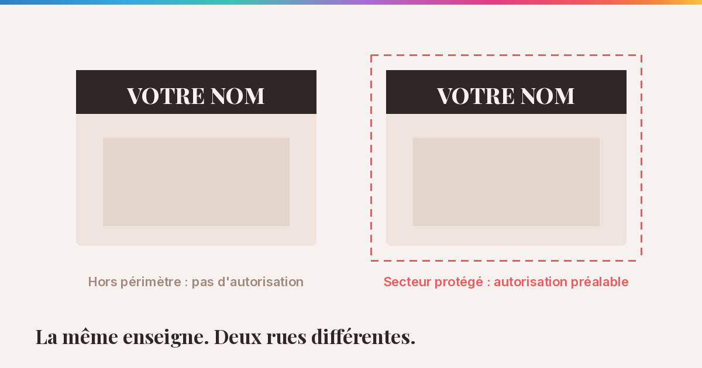
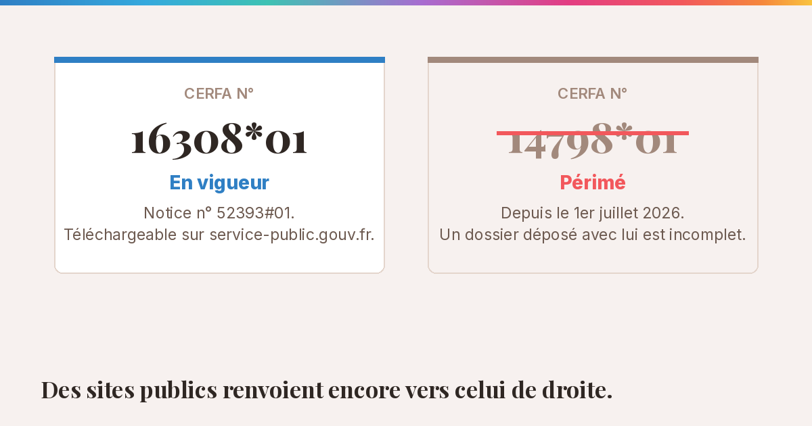
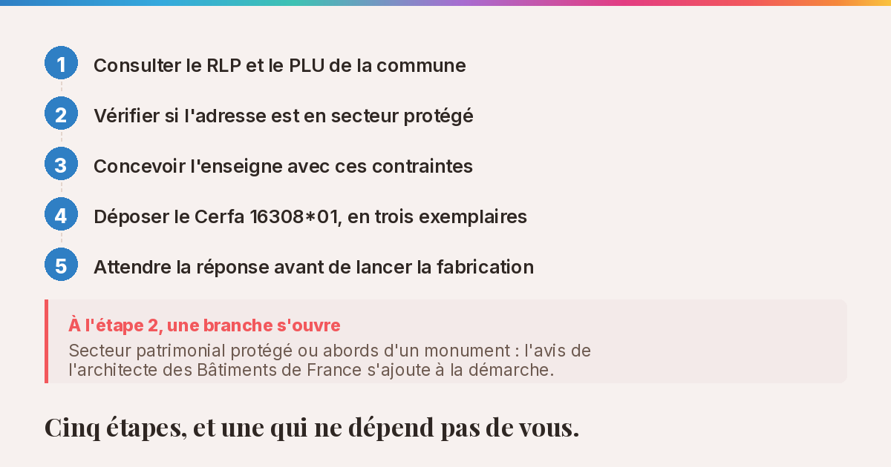

Enseigne de commerce : comment obtenir l'autorisation préalable dans les Pyrénées-Orientales

Vous avez trouvé le local. Le bail est signé, les travaux avancent, et l'enseigne est commandée — c'est l'une des dernières étapes quand on ouvre un commerce dans le 66. C'est généralement à ce moment-là qu'une question tombe : avez-vous le droit de la poser ?
La réponse surprend beaucoup de commerçants. Non, pas automatiquement. Et la démarche n'est pas celle que l'on croit.
Autorisation, pas déclaration : la confusion qui coûte du temps
On entend partout parler de « déclaration préalable » pour une enseigne. C'est inexact, et la nuance change tout.
Une déclaration, on la dépose et l'on peut avancer. Une autorisation, on l'attend. Pour une enseigne, c'est une autorisation préalable qui s'applique, au titre de l'article L.581-18 du code de l'environnement. Elle est délivrée par le maire — et, aux abords d'un monument historique ou dans un site patrimonial remarquable, après accord de l'architecte des Bâtiments de France.
Le formulaire porte un nom précis : Cerfa n° 16308*01, accompagné de sa notice, le Cerfa n° 52393#01. Il couvre l'installation, le remplacement et la modification d'un ou plusieurs dispositifs, et il est téléchargeable librement sur service-public.gouv.fr.

⚠️ Attention au numéro. Beaucoup de documents encore en ligne — y compris sur des sites de mairies et de préfectures — renvoient vers l'ancien formulaire Cerfa 14798*01. Il n'est plus valable : depuis le 1er juillet 2026, un dossier déposé avec l'ancien formulaire est considéré comme incomplet. Vérifiez toujours le numéro sur service-public.gouv.fr avant de télécharger.
Deux points pratiques que les commerçants découvrent souvent au guichet :
- le dossier se dépose en trois exemplaires ;
- au-delà de trois dispositifs, le formulaire doit être rempli une seconde fois.
Un commerce avec une enseigne en bandeau, un caisson en drapeau, un lettrage de vitrine et un adhésif de porte compte déjà quatre dispositifs.
Ce qui change d'une commune à l'autre
Le formulaire est national ; les règles qu'il applique ne le sont pas.
Deux documents locaux déterminent ce que vous avez réellement le droit de poser : le Règlement Local de Publicité (RLP), lorsque la commune en a adopté un, et le Plan Local d'Urbanisme (PLU). Ils encadrent les dimensions, les matériaux, les couleurs parfois, les règles d'éclairage et les horaires d'extinction nocturne.
Une enseigne lumineuse parfaitement légale dans une zone commerciale peut être refusée à trois kilomètres de là, dans un centre-ville ancien.
C'est pour cette raison qu'une enseigne se conçoit après avoir consulté ces documents, et non l'inverse. Dessiner d'abord, vérifier ensuite, c'est risquer de tout reprendre.
Le cas des secteurs patrimoniaux protégés
Une partie du centre ancien de Perpignan relève d'un secteur patrimonial protégé. D'autres communes du département sont concernées, en particulier celles dont le bourg présente un intérêt architectural.
Dans ces périmètres, une étape s'ajoute : l'avis des Architectes des Bâtiments de France. Cet avis ne porte pas seulement sur le dessin. Il porte sur les matériaux, le mode de fixation, le type d'éclairage, parfois sur la saturation des couleurs.
Concrètement, cela écarte souvent certaines solutions courantes — le caisson lumineux plein, par exemple — au profit de lettres découpées, de rétroéclairage indirect, ou de matériaux plus traditionnels.
Ce n'est pas une contrainte à subir. Une enseigne conçue d'emblée pour ces règles est généralement plus élégante que celle qui tente de les contourner, et elle vieillit mieux.
Anticiper, c'est économiser
L'erreur la plus coûteuse n'est pas administrative : elle est financière.
Une enseigne fabriquée puis refusée, c'est un investissement perdu, des semaines d'attente supplémentaires, et souvent une ouverture retardée. Reprendre un dossier est toujours plus long que le construire correctement la première fois.
La bonne séquence est simple :
- consulter le RLP et le PLU de la commune, ou appeler le service urbanisme de la mairie — ils répondent, et c'est gratuit ;
- vérifier si l'adresse est en secteur protégé ;
- concevoir l'enseigne avec ces contraintes comme point de départ ;
- télécharger le Cerfa n° 16308*01 depuis service-public.gouv.fr — et nulle part ailleurs — puis le déposer en trois exemplaires ;
- attendre la réponse avant de lancer la fabrication.

Cette dernière ligne est celle qu'on saute le plus souvent, et c'est celle qui coûte le plus cher.
Dessiner d'abord, vérifier ensuite, c'est risquer de tout reprendre.
Concevoir une enseigne qui passe du premier coup
Une enseigne réussie tient à trois choses simultanées : elle est lisible à la distance réelle où les gens la découvrent, elle est conforme aux règles de la commune, et elle est fabricable dans les matériaux autorisés.
Les trois se décident ensemble, dès le croquis. Pas l'une après l'autre. C'est la façon dont je travaille les enseignes et la signalétique : la règle locale entre dans le dessin, elle ne s'y ajoute pas après coup.
Un projet en préparation ?
Un premier échange est gratuit, et franc — y compris quand la réponse est que vous n'avez besoin de rien.